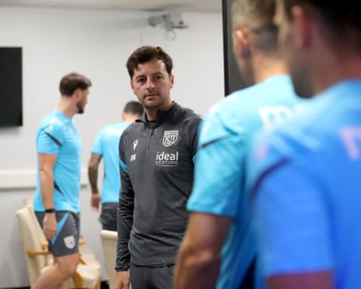

F or Ryan Mason, this opportunity has been a few years in the making. Since retiring from playing aged 26 after fracturing his skull – a horror injury that required 14 metal plates to be inserted into his skull, held together by 28 screws – he has built a library of coaching experience, working under José Mourinho, Antonio Conte and Ange Postecoglou. This season, after accepting his first full-time managerial role at West Brom , he has an opportunity to show his workings. “My last game was as a 25-year-old and I have had a seven-, eight-year apprenticeship, which in normal circumstances is quite a long time,” he says.
Nothing was normal about the end of Mason’s playing career. For a while there were 45 staples and he had a six-inch scar across his head. For about 10 days he had to be spoon-fed and being able to pick up a glass of orange juice was a major milestone. At the time he felt his career was in its infancy but stepping into coaching, initially in the Spurs academy, he discovered a new passion. “I definitely have a fire inside of me to be successful and fulfil the sort of dreams and ambitions that I had as a player,” he says.
He will always be eternally grateful for Mauricio Pochettino handing him his top-flight debut at the club he joined aged eight, in a north London derby at Arsenal no less. Mason’s final season with Tottenham culminated in winning the Europa League , the club’s first trophy in 17 years and their first European triumph since 1984. That night hardened Mason’s belief it was time to move on. Across seven years on the Spurs staff, including two spells in interim charge after the sackings of Mourinho and Conte, he estimates he has prepared for hundreds of matches, in the Premier League and Europe.
But nothing hit quite like that night in Spain. “For me, it just felt like the perfect ending to a great chapter of my life,” the 34-year-old says. “Bilbao was a confirmation. I’d been there as a player when we’d lost a cup final and it hurt. I’d managed in a cup final [the Carabao Cup defeat by Chelsea in 2021] and lost and it hurt. To close that chapter with what we achieved was great; it felt good to end the season that way. I knew after that that my time had come to an end. The opportunity to work with Ange – I’d only signed a two-year contract and it was an incredible two years. But as soon as we achieved that, it confirmed it was the right time. It didn’t feel right to continue. The possibility might not have even been there. The season finished three days later, I spoke to the [West Brom] chair [Shilen Patel] and Andrew [Nestor, the sporting director] at Albion.”
He was intent on becoming a No 1 after that first spell in interim charge after Mourinho was sacked, when at 29 Mason became the youngest coach in Premier League history. Mason thinks he felt ready to manage when targeted by clubs a couple of years ago but, enthused by working as an assistant to Postecoglou, he stayed at Spurs. “Fast-forward two years, to be part of history was amazing. Now, I want to write my own script and the timing of being here at this club feels right.”
Ryan Mason is not setting any bold predictions for his first season in charge at West Brom.Photograph: Adam Fradgley/West Bromwich Albion FC/Getty Images
It is a month to the day since Mason, almost half the age of his predecessor, Tony Mowbray, was announced as Albion’s head coach. Mason, who was on Albion’s shortlist when Carlos Corberán departed for Valencia last December, will be one of several new faces in the Championship technical areas this season, with nine second-tier clubs having replaced their manager since the end of last season and another, Leicester, seeking a successor to Ruud van Nistelrooy . The managerial churn in the Championship is startling: aside from Kieran McKenna and Phil Parkinson, who return to the second tier after relegation and promotion respectively, Portsmouth’s 39-year-old head coach, John Mousinho, comfortably represents the longest-serving manager in the division at almost two and a half years.
Over the course of an hour in the Richardson Suite at the Hawthorns on Wednesday, Mason delivered a polished performance at his media unveiling. No sweeping statements or grand messages. But Mason, who took charge of his first Albion training session last Thursday and will take his squad to Austria on Saturday for a training camp in Burgenland, where they will play Dynamo Kyiv, allowed himself a chuckle as he fielded a question with a nod to his old boss.
Would Mason, who has signed a three-year contract, emulate Postecoglou in making a punchy promise about winning silverware in his second season? “I’m not in a position to say that. Ange has had an absolutely incredible career. I think over time people will start appreciating what he achieved for that club – he was the figurehead of that. In 20 years down the line, if I am able to say that then I’ll have had an extremely successful managerial career.”